If you’ve spent any time with linear regression, you know that residuals are the workhorses of diagnostics. You plot them, you stare at them, you look for patterns that shouldn’t be there. The process feels almost meditative by the time you’ve done it enough times.
So here’s a question worth asking before we go any further: what exactly is a residual?
In a linear model, the answer seems almost too simple to state. A residual is the difference between what you observed and what the model predicted:
\[r_i = y_i - \hat{y}_i\]
That’s it. And because OLS models have normally distributed errors by assumption, and because the residuals are consistent estimators of those errors, the residuals themselves should look approximately normal. Their distribution is familiar. You know what “good” looks like.
Generalized linear models break all of this. The response variable is no longer assumed to be normally distributed — it might be binary, or a count, or ordinal. The conditional mean is no longer a simple linear function of the predictors; it’s a transformation of one. And the variance of the outcome is no longer constant — it depends on the mean in a way that’s specific to the distributional family. All of the comfortable intuitions you’ve built up about residuals need to be revised.
This page works through what residuals mean in the GLM context, why the most natural choices turn out to have serious limitations, and what current best practice looks like. We’ll end up at randomized quantile residuals (Dunn and Smyth 1996) and their simulation-based cousins from the DHARMa package (Hartig 2022) — and you’ll understand why these approaches work, not just how to run them.
Click ‘show’ to see list of libraries.
P <- c(
"knitr", # rendering
"kableExtra", # table formatting
"statmod", # randomized quantile residuals (analytical)
"DHARMa", # simulation-based quantile residuals
"performance", # check_model(), check_residuals()
"ggResidpanel", # resid_panel(), resid_compare()
"lme4", # glmer() for GLMM examples
"MASS", # glm.nb() for negative binomial
"boot", # glm.diag() for standardized residuals
"patchwork", # combining ggplots
"tidyverse" # wrangling and ggplot2 — load last
)
for (pkg in P) {
if (!require(pkg, character.only = TRUE)) {
install.packages(pkg, repos = "http://cran.us.r-project.org")
}
library(pkg, character.only = TRUE)
}
rm(P, pkg) # clean up the messClick ‘show’ to see code for data simulations.
set.seed(1975) # for reproducibility
#----------------------------#
# simulation 1: poisson (nonlinearity demo)
# adapted from Craig (2024)
n.poi <- 400
x1 <- rnorm(n.poi, mean = 0, sd = 1.5)
x2 <- rnorm(n.poi, mean = 0, sd = 1.5)
eta.true <- 2.0 + 0.2*x1 + 0.1*x1^2 - 0.15*x2
y.count <- rpois(n.poi, lambda = exp(eta.true))
poi.df <- data.frame(y = y.count, x1 = x1, x2 = x2)
# misspecified model
poi.wrong <- glm(y ~ x1 + x2,
family = poisson(link = "log"),
data = poi.df)
# correctly specified model
poi.right <- glm(y ~ x1 + I(x1^2) + x2,
family = poisson(link = "log"),
data = poi.df)
#----------------------------#
# simulation 2: binary data
n.bin <- 600
x.bin <- rnorm(n.bin)
p.bin <- plogis(-0.3 + 1.5 * x.bin)
y.bin <- rbinom(n.bin, size = 1, prob = p.bin)
bin.df <- data.frame(y = y.bin, x = x.bin)
logit.mod <- glm(y ~ x,
family = binomial(link = "logit"),
data = bin.df,
na.action = na.omit)
#----------------------------#
# simulation 3: multilevel binary data
n.groups <- 25
n.per <- 30
n.total <- n.groups * n.per
school.id <- rep(seq_len(n.groups), each = n.per)
u.j <- rnorm(n.groups, mean = 0, sd = 0.9)
u.i <- u.j[school.id]
x.clust <- rnorm(n.total)
eta.clust <- -0.4 + 0.9 * x.clust + u.i
y.clust <- rbinom(n.total, 1, plogis(eta.clust))
glmm.df <- data.frame(
y = y.clust,
x = x.clust,
school = factor(school.id)
)
# fit the GLMM
glmm.mod <- lme4::glmer(
y ~ x + (1 | school),
data = glmm.df,
family = binomial(link = "logit")
)
#----------------------------#
# simulation 4: negative binomial data
n.nb <- 400
x.nb <- rnorm(n.nb)
mu.nb <- exp(1.5 + 0.8 * x.nb)
y.nb <- rnegbin(n.nb, mu = mu.nb, theta = 2)
nb.df <- data.frame(y = y.nb, x = x.nb)
nb.mod <- MASS::glm.nb(y ~ x, data = nb.df)Before we look at residuals, it’s worth being precise about what “error” means in a GLM, because it’s subtler than in OLS. In a standard linear model, the error is an explicit additive term:
\[Y_i = \mu_i + \varepsilon_i, \qquad \varepsilon_i \sim N(0, \sigma^2)\]
The error \(\varepsilon_i\) lives alongside the mean. We estimate it directly as a residual, such that \(\texttt{RESID}_i = y_i - \hat{y_i}\). Because it’s assumed to be normally distributed, normal-based plots and tests apply immediately.
In a GLM, there is no separate additive error term. Instead, the model says:
\[Y_i \sim \text{EFD}(\mu_i, \phi)\]
where EFD is some exponential family distribution (Poisson, Binomial, Gamma, etc.) with conditional mean \(\mu_i = g^{-1}(\mathbf{x}_i^\top\boldsymbol{\beta})\) and dispersion parameter \(\phi\).1 The randomness in \(Y_i\) comes entirely from the assumed distribution. In other words, it’s baked into the distributional family, not tacked on as a separate error term.
This has a practical consequence: we can’t define a residual simply as \(y_i - \hat{y}_i\) and expect it to behave nicely, because \(y_i\) and \(\hat{y}_i\) come from a distribution that may be highly skewed, bounded, or discrete. The difference between an observed binary outcome (0 or 1) and a predicted probability (say, 0.73) isn’t normally distributed, no matter how well-specified the model is. It’s a messy thing to look at.
So, does that mean that GLMs don’t really have residuals? How do we do diagnostics, then?
That’s right. We can’t just subtract the fitted values from the observed values and call it a day. Instead, we have to be more creative about how we summarize the discrepancy between the data and the model. This is why there are multiple types of residuals in the GLM context, each designed to capture a different aspect of that discrepancy. We’ll go through them one by one, but keep in mind that none of them are perfect. They all have limitations that we need to understand to use them effectively. But the takeaway message so far is just this:
The residuals from a GLM don’t estimate additive errors because GLMs don’t have additive errors. What we call “residuals” in the GLM context are various summaries of the discrepancy between observed and fitted values. But we have to be careful about which summary we use and what we expect it to look like.
Okay, but where do we find these “summaries”?
Excellent question. Let’s go through some of our options in the next section.
Because there’s no single natural residual for GLMs, statisticians have developed several alternatives, each designed to capture a different aspect of the model-data discrepancy. The following taxonomy draws on Craig (2024) and Fox (2016). For each type, I’ll show the formula, the R code, and what you’d use it for.
The response residual is the simplest: just the difference between the observed and fitted values, on the original scale of the response:
\[r_{i,R} = y_i - \hat{\mu}_i\]
# response residuals
r.response <- residuals(poi.wrong, type = "response")
summary(r.response)## Min. 1st Qu. Median Mean 3rd Qu. Max.
## -11.288 -2.855 -0.894 0.000 1.785 54.076These are intuitive to think about, since the residual is in the same units as \(Y\). However, they have a critical flaw: their variance is not constant. For a Poisson model, the variance of \(Y\) is equal to its mean (\(\text{Var}(Y) = \mu\)), so observations with larger fitted values will naturally have more variable residuals. This makes plots of response residuals against fitted values difficult to interpret, because what looks like a funnel shape might just be a correct model respecting the Poisson variance structure rather than evidence of misfit.
GLMs are typically estimated via iteratively reweighted least squares (IRWLS), and the working residual is the residual from the final iteration of that process: the difference between the observed and fitted values on the link scale. Here’s what that looks like:
\[r_{i,W} = Z_i - \hat{\eta}_i\]
where \(Z_i\) is the “working response” (the adjusted dependent variable in the last IRWLS step) and \(\hat{\eta}_i\) is the fitted linear predictor. Adding \(x_{ij}\hat{\beta}_j\) to the working residual gives you the partial residual for variable \(j\), which is the basis of component-plus-residual plots:
# working residuals
r.working <- residuals(poi.wrong, type = "working")
# partial residuals
r.partial.x1 <- residuals(poi.wrong, type = "partial")[, "x1"]
r.partial.x2 <- residuals(poi.wrong, type = "partial")[, "x2"]Working residuals are the basis of many diagnostic plots in software, but they’re on the link scale (e.g., the log scale for a Poisson model), which makes them less interpretable for general audiences.
The Pearson residual standardizes the response residual by the model-implied standard deviation of \(Y_i\):
\[r_{i,P} = \frac{y_i - \hat{\mu}_i}{\sqrt{V(\hat{\mu}_i)}}\]
where \(V(\hat{\mu}_i)\) is the variance function of the distribution evaluated at \(\hat{\mu}_i\). For a Poisson model, \(V(\mu) = \mu\), so the Pearson residual divides by \(\sqrt{\hat{\mu}_i}\). For a binomial model with \(n_i\) trials, \(V(\mu) = \mu(1-\mu)/n_i\).
The sum of squared Pearson residuals gives the Pearson \(\chi^2\) statistic: \(\sum r_{i,P}^2 = X^2\).
# pearson residuals
r.pearson <- residuals(poi.wrong, type = "pearson")
# the sum of squared pearson residuals gives the Pearson chi-squared statistic
x2.stat <- sum(r.pearson^2)
cat("Pearson chi-squared:", round(x2.stat, 2), "\n")## Pearson chi-squared: 932.1cat("Degrees of freedom:", df.residual(poi.wrong), "\n")## Degrees of freedom: 397cat("Ratio (should be ~1 if equidispersed):", round(x2.stat / df.residual(poi.wrong), 3), "\n")## Ratio (should be ~1 if equidispersed): 2.348Pearson residuals have approximately constant variance if the variance function is correctly specified, making them more useful for heteroscedasticity checks than response residuals.
The standardized version goes one step further. The standardized Pearson residual adjusts for leverage (\(h_{ii}\), the diagonal of the GLM hat matrix) and the dispersion parameter \(\hat{\phi}\):
\[r_{i,SP} = \frac{y_i - \hat{\mu}_i}{\sqrt{\hat{\phi}\, V(\hat{\mu}_i)(1 - h_{ii})}}\]
This is the GLM analogue of the studentized residual from OLS. It should have approximately constant variance if the model is correctly specified, making it the best choice among the traditional residual types for detecting variance misspecification. In R, it’s available through the boot package:2
# several diagnostics at once
poi.diag <- boot::glm.diag(poi.wrong)
# standardized Pearson residuals
r.std.pearson <- poi.diag$rp The deviance residual is based on each observation’s contribution to the model’s overall deviance \(D\). If \(d_i\) is observation \(i\)’s contribution to the deviance, then:
\[r_{i,D} = \text{sign}(y_i - \hat{\mu}_i)\sqrt{d_i}\]
The sum of squared deviance residuals equals the total residual deviance: \(\sum r_{i,D}^2 = D(\hat{\boldsymbol{\beta}})\).
Deviance residuals tend to be less skewed than Pearson residuals for most GLM families, which makes them somewhat more useful for outlier detection — except for binary outcomes, where even deviance residuals are badly non-normal (more on this below).
# deviance residuals
r.deviance <- residuals(poi.wrong, type = "deviance")
# standardized version
r.std.deviance <- poi.diag$rd
# jackknife residuals (approximated)
r.jackknife <- poi.diag$resThe standardized deviance residual adjusts for leverage the same way the standardized Pearson residual does, and the jackknife (deleted studentized) residual approximates the change in deviance when observation \(i\) is removed. The jackknife residual is generally a good all-purpose choice among the traditional options (Craig 2024).
That’s a lot to take in.
It is. How about we put it all together in a table?
Click ‘show’ to see code used for summary table.
resid.tbl <- data.frame(
Type = c(
"Response",
"Working",
"Pearson",
"Std. Pearson",
"Deviance",
"Std. Deviance",
"Jackknife"
),
Formula_sketch = c(
"\\(y_i - \\hat{\\mu}_i\\)",
"\\(Z_i - \\hat{\\eta}_i\\)",
"\\((y_i - \\hat{\\mu}_i)/\\sqrt{V(\\hat{\\mu}_i)}\\)",
"Pearson / \\(\\sqrt{\\hat{\\phi}(1-h_{ii})}\\)",
"\\(\\operatorname{sign}(y_i-\\hat{\\mu}_i)\\sqrt{d_i}\\)",
"Deviance / \\(\\sqrt{\\hat{\\phi}(1-h_{ii})}\\)",
"Approx. deleted studentized"
),
R_code = c(
'`residuals(m, type="response")`',
'`residuals(m, type="working")`',
'`residuals(m, type="pearson")`',
'`glm.diag(m)$rp`',
'`residuals(m, type="deviance")`',
'`glm.diag(m)$rd`',
'`glm.diag(m)$res`'
),
Best_for = c(
"Intuition; same units as Y",
"Linearity via partial residual plots",
"Variance misspecification; Pearson $\\chi^2$",
"Outlier detection; constant variance",
"Outlier detection (less skewed than Pearson)",
"Outlier detection; constant variance",
"General-purpose; best of the traditional options"
)
)
kable(
resid.tbl,
col.names = c("Type", "Formula (sketch)", "R code", "Best for"),
caption = "Traditional GLM residual types",
escape = FALSE
) %>%
kable_styling(
bootstrap_options = c("striped", "hover"),
full_width = FALSE
)| Type | Formula (sketch) | R code | Best for |
|---|---|---|---|
| Response | \(y_i - \hat{\mu}_i\) |
residuals(m, type="response")
|
Intuition; same units as Y |
| Working | \(Z_i - \hat{\eta}_i\) |
residuals(m, type="working")
|
Linearity via partial residual plots |
| Pearson | \((y_i - \hat{\mu}_i)/\sqrt{V(\hat{\mu}_i)}\) |
residuals(m, type="pearson")
|
Variance misspecification; Pearson \(\chi^2\) |
| Std. Pearson | Pearson / \(\sqrt{\hat{\phi}(1-h_{ii})}\) |
glm.diag(m)$rp
|
Outlier detection; constant variance |
| Deviance | \(\operatorname{sign}(y_i-\hat{\mu}_i)\sqrt{d_i}\) |
residuals(m, type="deviance")
|
Outlier detection (less skewed than Pearson) |
| Std. Deviance | Deviance / \(\sqrt{\hat{\phi}(1-h_{ii})}\) |
glm.diag(m)$rd
|
Outlier detection; constant variance |
| Jackknife | Approx. deleted studentized |
glm.diag(m)$res
|
General-purpose; best of the traditional options |
Here’s the uncomfortable truth that the table above doesn’t fully communicate: for non-Gaussian GLMs, all of the residual types above have properties that make them hard to use reliably.
You’ve got to be kidding. After all that, none of these are the right option?!
Basically, yeah. The core problem is that they all try to use continuous, approximately-normal approximations to summarize discrepancies in a non-normal, sometimes discrete distribution. The approximations work reasonably well in some cases (e.g., large-count Poisson data where the normal approximation to the Poisson kicks in), but they break down in exactly the cases where you most need reliable diagnostics.
Consider the binary logistic regression case. With a binary outcome (\(y_i \in \{0, 1\}\)), the response residual takes only two possible values for any given fitted probability \(\hat{p}_i\): either \(1 - \hat{p}_i\) (when \(y_i = 1\)) or \(-\hat{p}_i\) (when \(y_i = 0\)). No matter how good your model is, a QQ plot of these residuals will look terrible. This is because the residuals can’t possibly be normal when the outcome can only be 0 or 1. And this is also why you’ll see a bunch of weird lines or lattice patterns in plots of these types of residuals run on most limited dependent variables.
Let’s take a look at the QQ plots for response, deviance, and Pearson residuals from a well-specified binary logistic model. The left panel shows the theoretical problem: even a correctly specified model produces non-normal response residuals. Deviance residuals (center) are better but still non-normal. Pearson residuals (right) show the same issue.
par(mfrow = c(1, 3))
# response residuals
qqnorm(residuals(logit.mod, type = "response"),
main = "Response Residuals",
pch = 20, col = "grey40", cex = 0.6)
qqline(residuals(logit.mod, type = "response"), col = "red")
# deviance residuals
qqnorm(residuals(logit.mod, type = "deviance"),
main = "Deviance Residuals",
pch = 20, col = "grey40", cex = 0.6)
qqline(residuals(logit.mod, type = "deviance"), col = "red")
# pearson residuals
qqnorm(residuals(logit.mod, type = "pearson"),
main = "Pearson Residuals",
pch = 20, col = "grey40", cex = 0.6)
qqline(residuals(logit.mod, type = "pearson"), col = "red")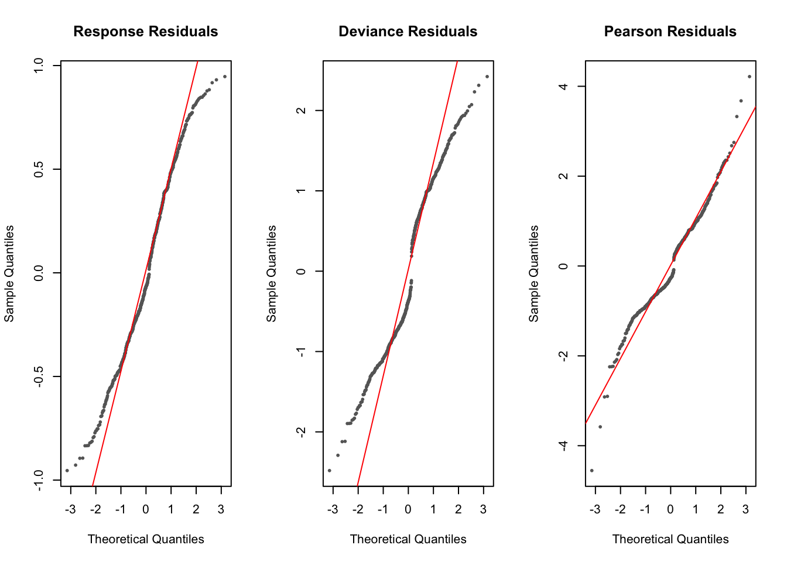
Figure 1: QQ plots of three residual types
You’re right. These look awful. So are you telling me that there’s no way to use these residuals to diagnose a binary logistic regression?
Not exactly. They’re not entirely useless. Pearson and deviance residuals can still flag outliers and influential observations. Working/partial residuals are still useful for linearity checks. But for assessing the overall distribution of residuals (via QQ plots) or for detecting subtle misspecification, the traditional residuals are unreliable for binary outcomes and for any other discrete distribution.
The issue persists, in a milder form, for count models. Even for Poisson data, the discrete nature of the outcome means that residuals of all traditional types can show non-normality that’s entirely due to the discreteness of the distribution rather than to model misfit. This makes it hard to separate signal from noise in QQ plots.
The standard QQ plot of deviance or Pearson residuals is appropriate for Gaussian GLMs but should be interpreted with great caution — and often avoided entirely — for binary, count, and other discrete-outcome GLMs.
Let me guess: there’s some magical alternative that solves this problem?
It’s not magical, but yeah, there is a much better option. The solution is to use randomized quantile residuals.
This solution, proposed by Dunn and Smyth (1996), is elegant. The key insight comes from the probability integral transform: if \(Y\) is a continuous random variable with CDF \(F\), then \(F(Y) \sim \text{Uniform}(0, 1)\) regardless of the distribution of \(Y\). And if \(U \sim \text{Uniform}(0,1)\), then \(\Phi^{-1}(U) \sim N(0,1)\) (where \(\Phi^{-1}\) is the standard normal quantile function). So:
\[r_{i,q} = \Phi^{-1}(F(y_i \mid \hat{\mu}_i, \hat{\phi}))\]
If the model is correctly specified, the CDF evaluated at the observed value \(y_i\) should look like a draw from a Uniform(0,1) distribution. This means the quantile-transformed version \(r_{i,q}\) should look like a draw from \(N(0,1)\). Under a correctly specified model, randomized quantile residuals are exactly standard normal — not approximately, not asymptotically, but exactly (for continuous distributions).
That’s for continuous distributions, right? What about binary outcomes and count data, where \(F\) is a step function?
Right, this is a very clever insight. This is where the “randomized” part comes in. For discrete distributions, the probability integral transform doesn’t produce a uniform distribution because the CDF is a step function. It jumps from value to value rather than varying continuously. The fix is to randomize within the jump:
Let \(a_i = F(\max(0, y_i - 1) \mid \hat{\mu}_i, \hat{\phi})\) and \(b_i = F(y_i \mid \hat{\mu}_i, \hat{\phi})\). Then draw \(u_i \sim \text{Uniform}(a_i, b_i)\) and define:
\[r_{i,q} = \Phi^{-1}(u_i)\]
This single random draw fills in the gap at the step, making the distribution of \(r_{i,q}\) continuous even when \(Y\) is discrete. Under a correctly specified model, the \(r_{i,q}\) are exactly \(N(0,1)\) — full stop.
The only catch is that, because \(u_i\) is random, the specific values of \(r_{i,q}\) will differ slightly from one run to the next. The pattern in the residuals — whether they look normal, whether there are outliers, whether there’s structure — stays the same. Only the exact positions of individual points jitter slightly.
Let’s see what this looks like. We’ll make QQ plots of the randomized quantile residuals (RQRs) for the misspecified and correctly specified Poisson model below. Remember that the QQ plots should show straight lines under a good model. The pattern of deviation on the left reveals the missing nonlinear term.
# qresid() is the general function; qres.pois() is family-specific
r.qr.wrong <- statmod::qres.pois(poi.wrong) # wrong model
r.qr.right <- statmod::qres.pois(poi.right) # correct model
par(mfrow = c(1, 2))
# QQ plot for misspecified model
qqnorm(r.qr.wrong,
main = "Misspecified Model\n(missing x1²)",
pch = 20, col = "grey40", cex = 0.6)
qqline(r.qr.wrong, col = "red")
# QQ plot for correctly specified model
qqnorm(r.qr.right,
main = "Correctly Specified Model",
pch = 20, col = "grey40", cex = 0.6)
qqline(r.qr.right, col = "red")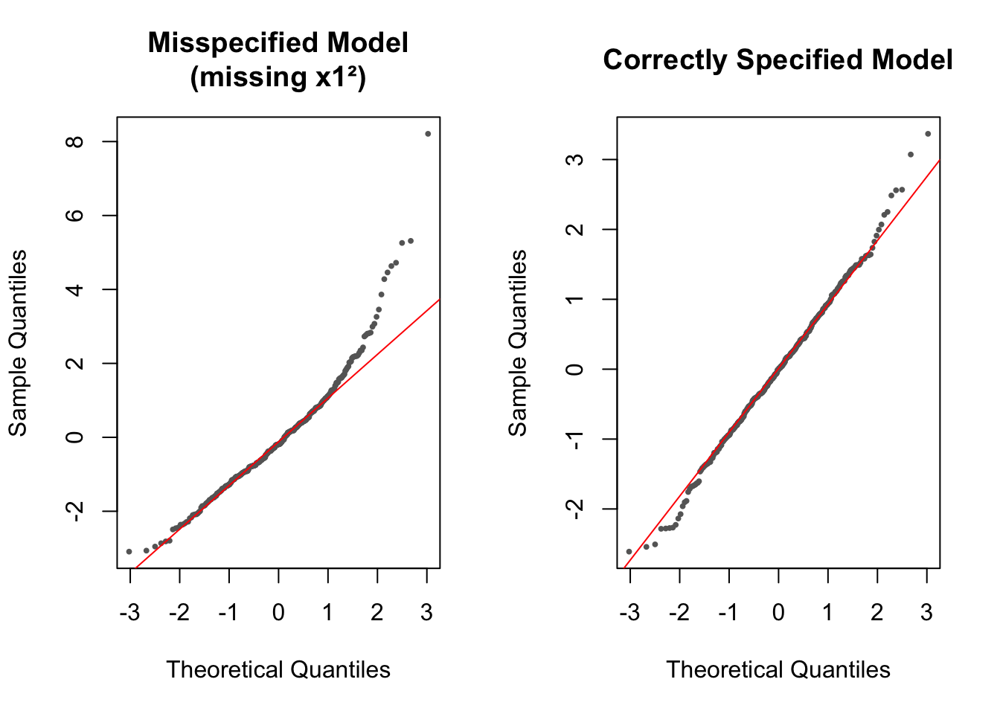
Figure 2: Quantile residuals for the misspecified Poisson model (left) and the correctly specified model (right)
The deviation in the left panel is unmistakable. The correctly specified model (right) produces residuals that track the reference line closely — which is exactly what we’re looking for.
Wow! That’s cool. But is this just a Poisson thing, or can we use this approach across all of the different types of limited dependent variables?
It is cool, especially since this approach can be tailored for a whole bunch of different link functions to suit a wide range of limited dependent variables. The statmod package (Smyth et al. 2023) provides family-specific functions: qres.pois() for Poisson, qres.nb() for negative binomial, qres.binom() for binomial. A general qresid() function handles model objects from many families automatically.
Nice! So, is a QQ plot the only thing you can do with these?
Not at all. These residuals can be used for the same kinds of things that we use residuals for in OLS diagnostics (or at least for their GLM equivalents). For example, we can use them to diagnose nonlinearity by plotting them against the linear predictor. Let’s try this with our misspecified Poisson model:
# general-purpose quantile residuals (works on glm objects)
r.qr <- statmod::qresid(poi.wrong)
# plot against the linear predictor (on the link scale)
plot(
predict(poi.wrong), # fitted linear predictor (log scale)
r.qr,
xlab = "Fitted Linear Predictor",
ylab = "Quantile Residual",
main = "Quantile Residuals vs. Fitted Values",
pch = 20, col = "grey40", cex = 0.6
)
abline(h = 0, col = "red", lty = 2)
lines(lowess(predict(poi.wrong), r.qr), col = "steelblue", lwd = 2)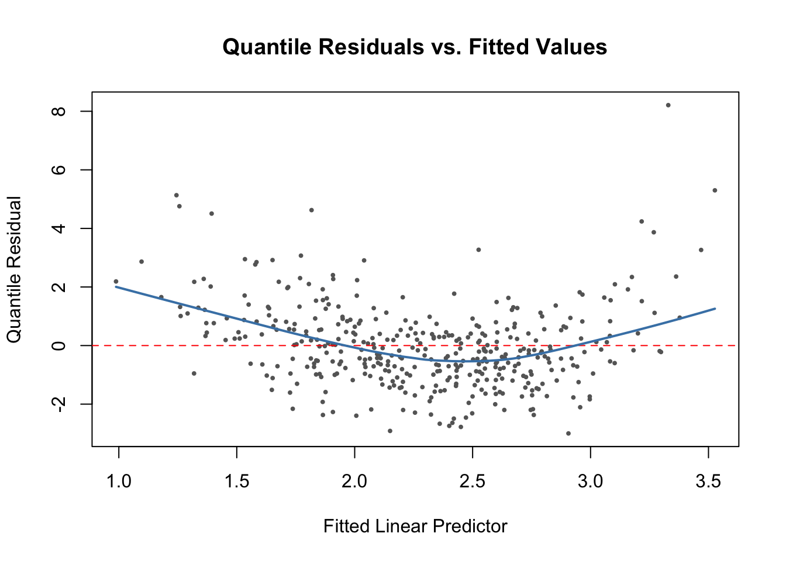
Figure 3: Quantile residual plot: residuals vs. linear predictor for the misspecified Poisson model
The curved pattern reveals the missing nonlinear term in x1. You can also plot quantile residuals against individual predictors to locate the source of poor fit:
par(mfrow = c(1, 2))
# against x1 — should show pattern from the missing quadratic
plot(x1, r.qr.wrong,
xlab = "x1", ylab = "Quantile Residual",
main = "QR vs. x1 (misspecified)",
pch = 20, col = "grey40", cex = 0.6)
abline(h = 0, col = "red", lty = 2)
lines(lowess(x1, r.qr.wrong), col = "steelblue", lwd = 2)
# against x2 — should look clean (x2 is correctly modeled)
plot(x2, r.qr.wrong,
xlab = "x2", ylab = "Quantile Residual",
main = "QR vs. x2 (misspecified)",
pch = 20, col = "grey40", cex = 0.6)
abline(h = 0, col = "red", lty = 2)
lines(lowess(x2, r.qr.wrong), col = "steelblue", lwd = 2)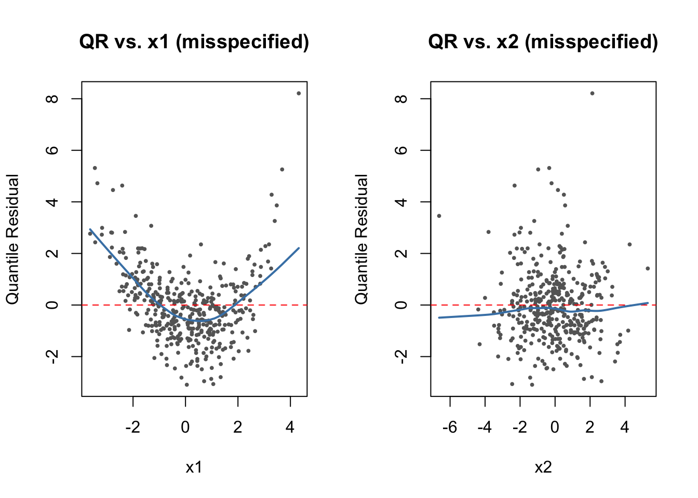
Figure 4: Quantile residuals vs. x1 (left) and x2 (right)
The curved pattern in the left panel points directly to the omitted x1² term. That pattern — a U-shape centered near zero — is the signature of a missing quadratic term. The x2 panel is clean, showing just some noise around the zero line, as expected. This is exactly how you’d use quantile residuals in practice: first look at the QQ plot to see if there’s misfit overall, then plot against predictors to locate it.
This is all well and good, but I sense that there’s a catch.
Aah, you know me too well. Yes, there’s a little bit of a catch. In the case of the RQRs, you need to know the analytical distribution of \(Y\). This isn’t usually a big deal unless you’re dealing with complexities like random effects. But fear not; I have a proposed solution for that, too!
The statmod approach to quantile residuals is elegant. However, it requires knowing the analytical CDF of the outcome distribution. This is usually not that big of a deal. For complex models, this becomes impractical. This is especially the case in generalized linear mixed models (GLMMs), where the marginal distribution of \(Y\) involves integrating over the random effects and has no closed-form CDF. There, it becomes really difficult to identify the specific analytical distribution of \(Y\).
We can address this by using DHARMa (Hartig 2022). This way of calculating residuals takes a different approach: instead of computing the CDF analytically, it simulates many datasets from the fitted model and uses the empirical distribution of those simulations as a stand-in for the theoretical CDF.
Hey, wait. This sounds vaguely Bayesian!
That’s a really good insight. While these aren’t Bayesian in any formal sense, they are certainly Bayesian-adjacent. They borrow a key idea, which is to use the model’s full predictive distribution to assess its fit. So, the question it asks is analogous to the question Bayesian statistics asks. The DHARMa version is something like this:
If the fitted model were true, where would the observed value fall among simulated outcomes from the model?
This sounds quite a bit like the posterior predictive check mindset we tend to see in Bayesian statistics. In other words, a good model should be able to generate data that looks similar to the observed data. Here, we’re sort of applying that idea to a frequentist model using point estimates from (usually) MLE.
Okay. So how do you actually do this? It sounds hard.
Actually, it’s not that hard in practice. Here’s the procedure:
Under a correctly specified model, these simulated quantile residuals should be uniform on \((0,1)\) — equivalently, the \(\Phi^{-1}\)-transformed version should be \(N(0,1)\). No analytical CDF required. Here’s what the residuals look like for our two Poisson models:
# simulate residuals from the misspecified model
sim.wrong <- DHARMa::simulateResiduals(poi.wrong, n = 500, plot = FALSE)
sim.right <- DHARMa::simulateResiduals(poi.right, n = 500, plot = FALSE)
par(mfrow = c(1, 2))
# QQ plot + residual vs. rank of fitted
plot(sim.wrong, main = "Misspecified Model")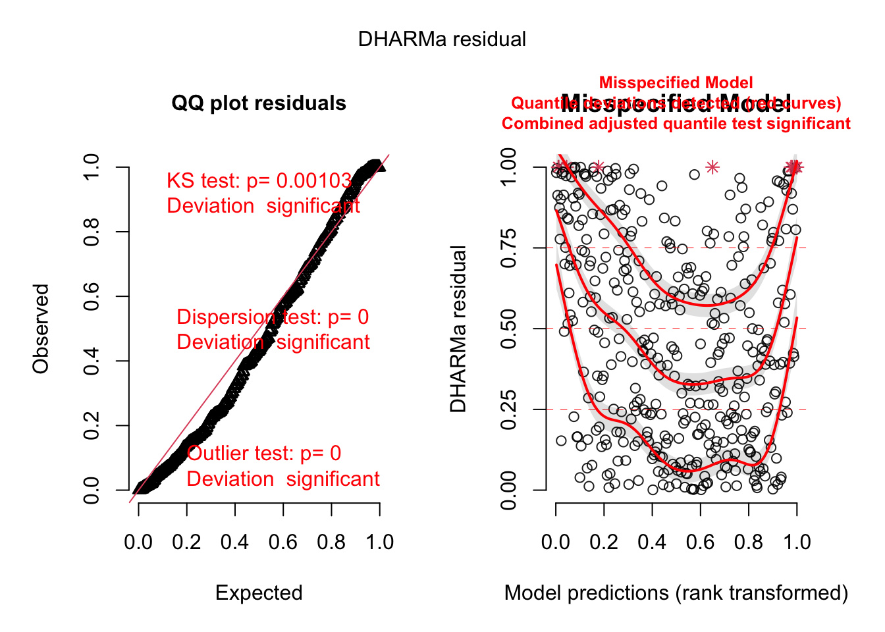
Figure 5: DHARMa residuals for the misspecified Poisson model
plot(sim.right, main = "Correctly Specified Model")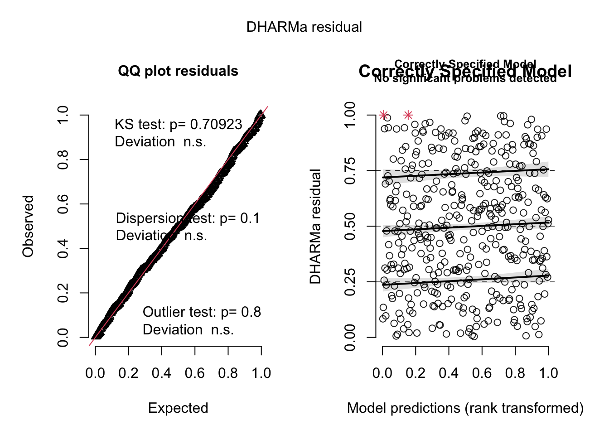
Figure 6: DHARMa residuals for the correctly specified Poisson model
DHARMa’s default plot shows two panels: a QQ plot of the simulated residuals against the expected uniform distribution, and a scatter plot of residuals against the rank of fitted values. Red asterisks in the QQ plot and colored bands in the residual plot indicate where significant deviations occur. That residual-vs-fitted plot checks for systematic patterns in the DHARMa residuals.
Just as with statmod, you can (and should) plot DHARMa residuals against each predictor to locate the source of any bad fit:
# DHARMa residuals against a variable of your choice
DHARMa::plotResiduals(sim.wrong, form = poi.df$x1,
xlab = "x1",
main = "DHARMa Residuals vs. x1 (Misspecified Model)")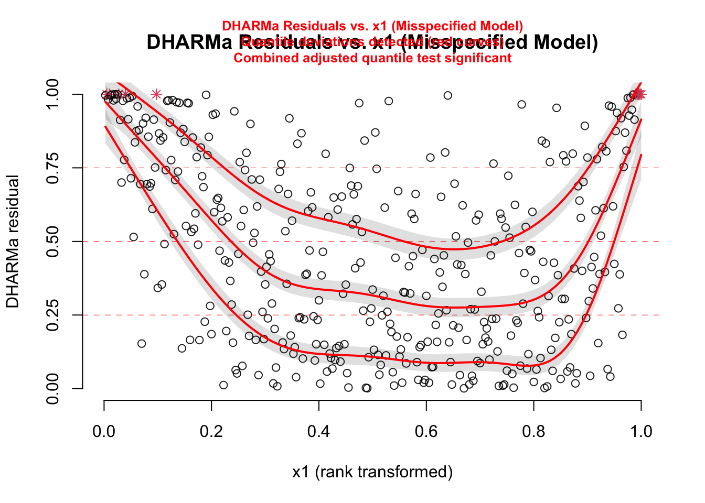
Figure 7: DHARMa residuals plotted against x1 for the misspecified model
The plot above shows the residuals plotted against \(X_1\), which we know is the source of the misspecification in our “wrong” Poisson model. The significant pattern (red banding) localizes the misfit to this predictor. This confirms what we know about the misspecification (since we’re the ones who created the misspecification in our original simulation).
Wait — if the residuals are constructed from random simulations, won’t the plots look a little different every time I run them?
Yes, slightly. But the patterns are stable across runs for any reasonable number of simulations. I’d say that \(n \geq 250\) is a good floor, while \(n = 500\) is reliable for most purposes. The specific residual value for any given observation jitters a tiny bit from run to run (this is the same randomization step as in statmod), but the overall shape of the QQ plot, the presence of curvature in the residual-vs-fitted plot, and the significance of formal tests remain consistent. Think of each plot as a sample from the distribution of plots you’d get: the signal stays, the noise varies slightly.
Okay, I’m impressed. We can use RQR and/or DHARMa-style residuals to make some useful diagnostic plots.
Yep. But we can do more than just plots!
DHARMa also provides hypothesis tests for specific types of misfit. These are useful for getting a second opinion when a plot is ambiguous.
# overall goodness of fit
DHARMa::testUniformity(sim.wrong)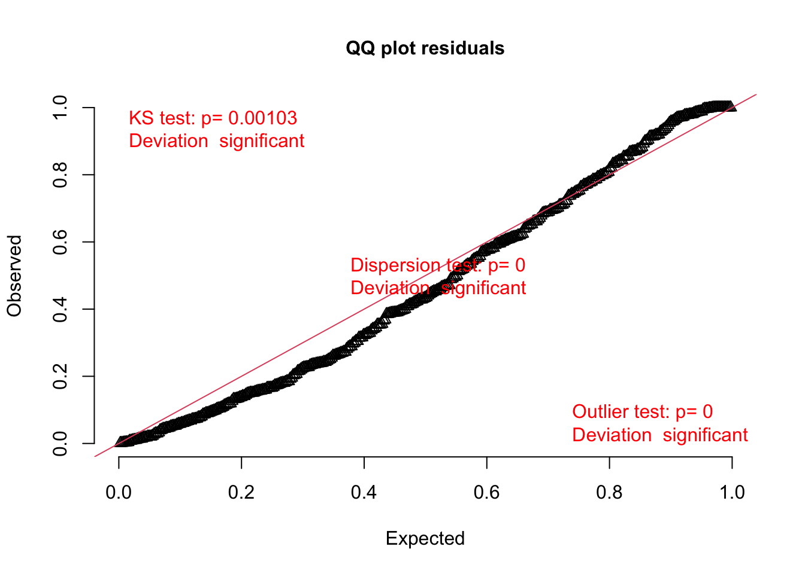
##
## Asymptotic one-sample Kolmogorov-Smirnov test
##
## data: simulationOutput$scaledResiduals
## D = 0.097, p-value = 0.001
## alternative hypothesis: two-sided# variance larger or smaller than model predicts
DHARMa::testDispersion(sim.wrong)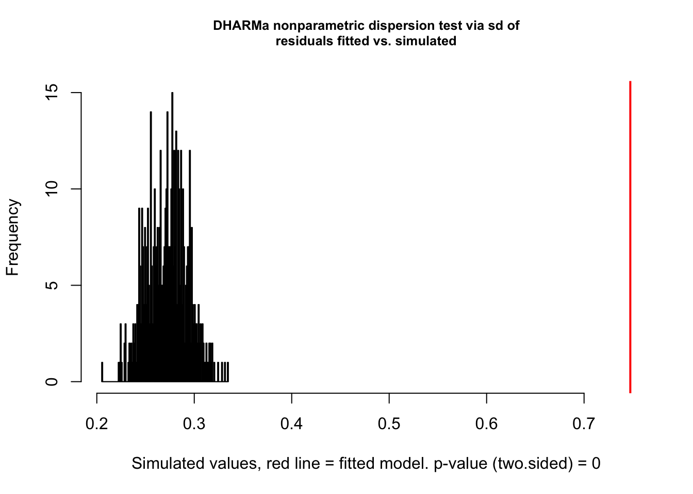
##
## DHARMa nonparametric dispersion test via sd of residuals fitted vs.
## simulated
##
## data: simulationOutput
## dispersion = 2.7, p-value <0.0000000000000002
## alternative hypothesis: two.sided# test for outliers
DHARMa::testOutliers(sim.wrong, type = "bootstrap", plot = FALSE)##
## DHARMa bootstrapped outlier test
##
## data: sim.wrong
## outliers at both margin(s) = 10, observations = 400, p-value
## <0.0000000000000002
## alternative hypothesis: two.sided
## percent confidence interval:
## 0.00 0.01
## sample estimates:
## outlier frequency (expected: 0.00375 )
## 0.025The testUniformity() function runs a Kolmogorov-Smirnov test on the simulated residuals against the uniform distribution. testDispersion() checks whether the variance of the residuals is what the model predicts. testOutliers() asks whether there are more extreme observations than the model would expect by chance.
Should I report the results of these tests in a paper?
Usually not — at least not as your primary evidence. These tests have well-known power issues: in large samples, trivial and substantively meaningless deviations can become significant; in small samples, important deviations can fly under the radar. The plots are your primary diagnostic tool. Use the tests as supplementary evidence when the visual is unclear, and always lead with a substantive discussion of what you see in the plots rather than a p-value.
Great. I think I get it now. So how do I actually implement this when I’m trying to assess one of my GLMs or GLMMs?
Good question. That calls for some practical workflow advice! Let’s look at a couple more tools that will come in handy; then, we can go over a quick checklist to guide you through the process in your own research.
The statmod and DHARMa approaches give you precise control over your diagnostic process. Two additional tools are worth knowing for a faster first-pass look at any model.
performance::check_model()The performance package (Lüdecke et al. 2021) provides check_model(), which produces a comprehensive panel of diagnostics for a wide variety of model types. For non-Gaussian GLMs, it uses DHARMa under the hood when residual_type = "simulated" (the default for non-Gaussian models). It gives you a helpful summary using simulated quantile residuals, so it’s a lot more useful than just running your typical plot(mod) for diagnostic plots. Included in this output is:
Is this a one-stop shop for diagnostics? Can I just run check_model() and be done?
It is like a one-stop shop, at least as a first step. It’ll give you the lay of the land so that you can figure out where to dig deeper. But it’s not a substitute for looking at the residuals yourself, plotting them against predictors, and thinking carefully about what the patterns mean in the context of your specific model and data. Use check_model() as a starting point, not an endpoint. Let’s see what it looks like for our broken Poisson model:
performance::check_model(poi.wrong)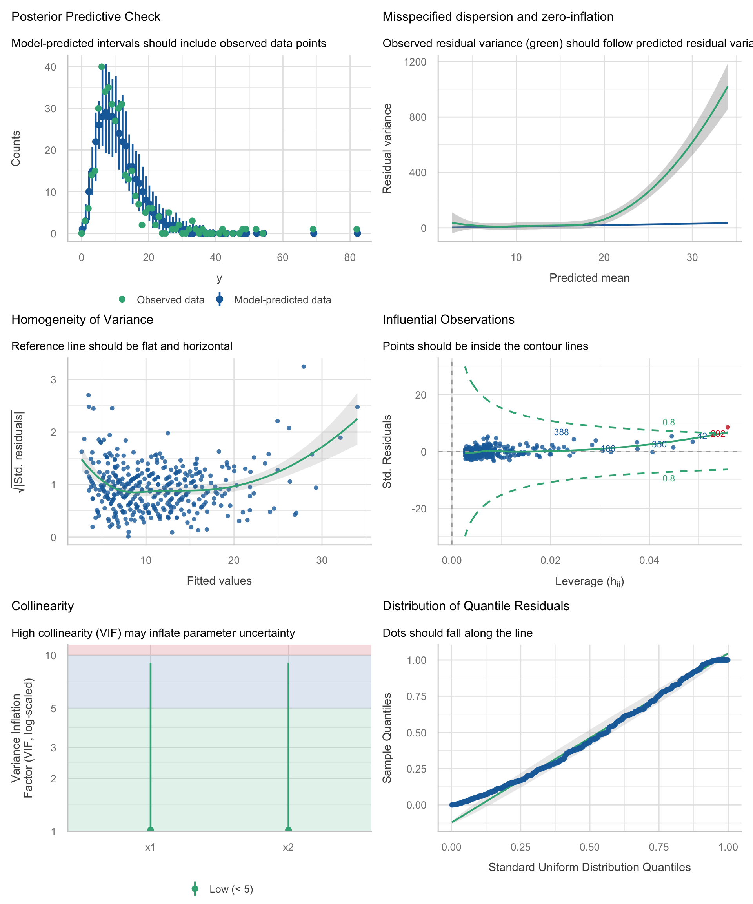
Note that I’ve included some chunk options here that you won’t be able to see in the html output: fig.width=10, fig.height=12, out.width='100%'. This is because the plots tend to have very compressed y-axes without specifying that you want them taller. With these options, the plots look pretty helpful, right?
They do look pretty cool. But I’m squinting at that QQ plot trying to decide if it’s bad enough to be worried.
Well, I think we can help with that, too. Here, we’ll make use of another cool tool in the performance package: check_residuals(). This wraps DHARMa’s testUniformity(). You can plot these results to give you a clean QQ plot suitable for including in a write-up. For any non-Gaussian GLM, this is an easy way to check goodness of fit by assessing the distribution of the quantile residuals. For our purposes, though, it also gives you the Kolmogorov-Smirnov one-sample test of the distribution, which can help you interpret the uniform QQ plot from the check_model() output. Let’s see what it says:
# KS test
performance::check_residuals(poi.wrong)## Warning: Non-uniformity of simulated residuals detected (p = 0.002).You’re right; that is helpful. Got anything else that might come in handy?
You know I do! Here’s one more little trick to keep up your sleeve: the ggResidpanel package.
ggResidpanelThe ggResidpanel package (Goode and Rey 2019) provides resid_panel() for a single model and resid_compare() for side-by-side comparison of multiple models. It works on lm, glm, lmerMod, and glmerMod objects.
# compare two models side by side
ggResidpanel::resid_compare(
models = list(poi.wrong, poi.right),
plots = "default",
type = "deviance", # deviance residuals for Poisson
smoother = TRUE,
title.opt = TRUE,
nrow = 2
)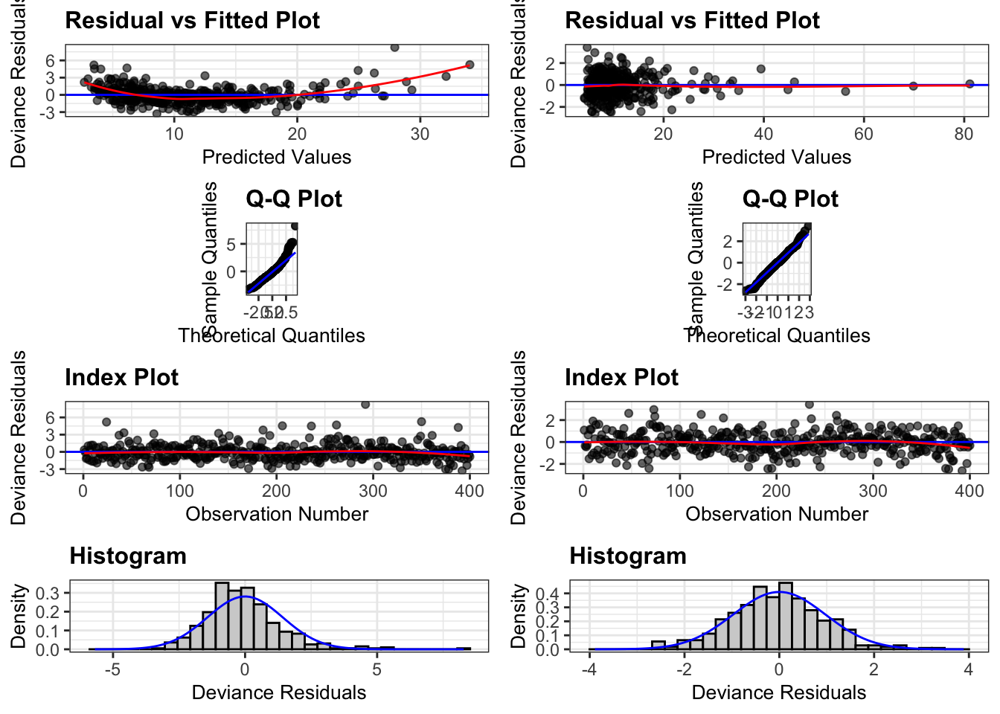
Figure 8: Panel comparing the misspecified (left) and correctly specified (right) Poisson models
The QQ plots and index plots are particularly useful here. For a single model, resid_panel() gives a similar panel. Specifying type = "pearson" or type = "deviance" selects the residual type; the default for glm objects is deviance.
Wait, what happened to the RQR/DHARMa-based residuals?
Good catch. This is one very important thing to be aware of: ggResidpanel uses traditional residual types (Pearson, deviance) and does not currently support randomized quantile residuals or DHARMa-based residuals. It’s most useful for a quick look, and for Gaussian-family models where traditional residuals are well-behaved. For non-Gaussian models, treat ggResidpanel output with the cautions we talked about in the “Taxonomy” section above.
So far, we’ve looked at single-level GLMs. But does this stuff work for mixed models, too?
I’m so glad you asked.
Mixed models (GLMMs) add a new dimension to the residual problem: there are now two sources of random variation, not one. Observations within a group share a random effect, and then there’s individual-level variation on top of that. When we talk about “residuals” for a GLMM, we need to be clear about which level we’re talking about.
The model is:
\[g(\mu_{ij}) = \mathbf{x}_{ij}^\top\boldsymbol{\beta} + \mathbf{z}_{ij}^\top\mathbf{u}_j\]
where \(\mathbf{u}_j \sim N(\mathbf{0}, \boldsymbol{\Sigma})\) are the group-level random effects. There are two types of “error” here:
Both levels deserve diagnostic attention.
DHARMa handles GLMMs seamlessly; this is one of its main advantages over statmod, which requires an analytical CDF. Simulation from a fitted glmer() model automatically marginalizes over the random effects, producing valid quantile residuals at the observation level:
# simulate residuals from the GLMM
# DHARMa's simulateResiduals() works on glmerMod objects
sim.glmm <- DHARMa::simulateResiduals(glmm.mod, n = 500, plot = FALSE)
# diagnostic plot
plot(sim.glmm, main = "GLMM Quantile Residuals (DHARMa)")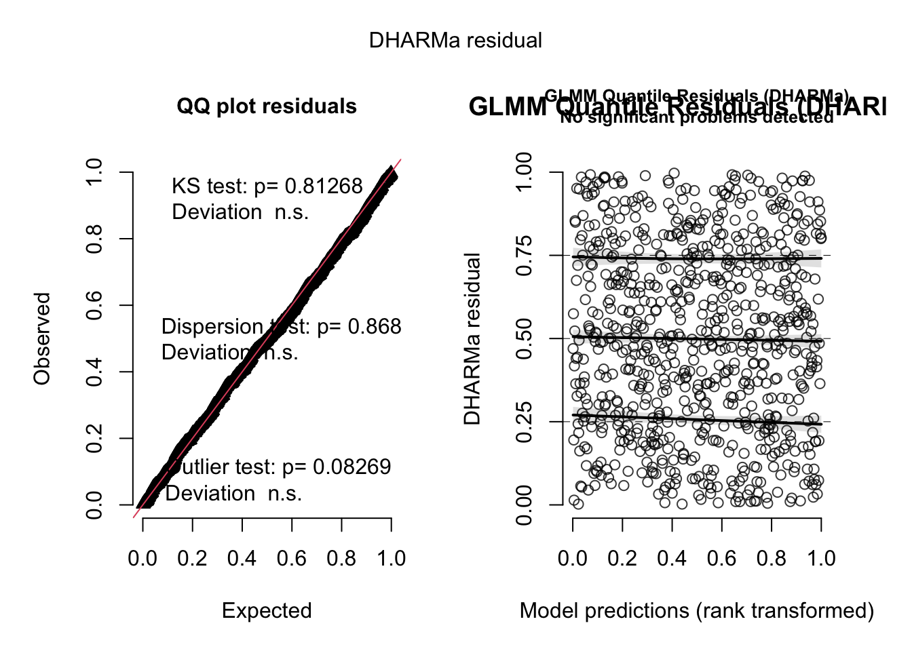
Figure 9: DHARMa quantile residuals for the simulated GLMM.
Under a correctly specified model, these quantile residuals should follow a uniform distribution. This one looks pretty darned good. Once we’ve simulated the DHARMa residuals, we can feed them into the testUniformity() and/or testDispersion() and set plot = FALSE to get just the hypothesis tests. I turned off the plot for the uniformity test, since that plot is a replication of the plot on the left from above. That will give us just the Kolmogorov-Smirnov test. I’ll leave the plot in for the dispersion test, though, since this plot doesn’t appear in the output above.
# formal tests for the GLMM
DHARMa::testUniformity(sim.glmm,
plot = FALSE)##
## Asymptotic one-sample Kolmogorov-Smirnov test
##
## data: simulationOutput$scaledResiduals
## D = 0.023, p-value = 0.8
## alternative hypothesis: two-sidedDHARMa::testDispersion(sim.glmm,
plot = TRUE)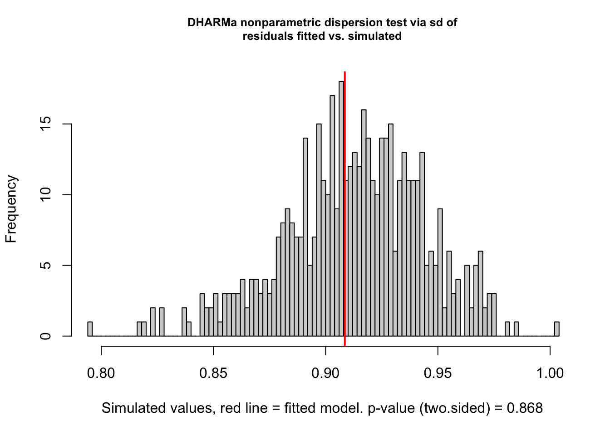
##
## DHARMa nonparametric dispersion test via sd of residuals fitted vs.
## simulated
##
## data: simulationOutput
## dispersion = 1, p-value = 0.9
## alternative hypothesis: two.sidedBoth of the tests suggest that our GLMM has uniform residuals and is not overdispersed. Both of these things suggest our model is a reasonable fit to the data. Now, let’s talk about the elephant in the room: the random effects.
The random effects \(\hat{u}_j\) are assumed to be drawn from a normal distribution with mean zero. A QQ plot of the BLUPs is a useful check on this assumption. Systematic deviations from normality might indicate that the random effects structure is misspecified or that there are outlier groups.3
# extract BLUPs from the GLMM
blup.vals <- ranef(glmm.mod)$school[, "(Intercept)"]
# QQ plot
qqnorm(blup.vals,
main = "QQ Plot of School-Level Random Effects",
pch = 20, col = "steelblue")
qqline(blup.vals, col = "red")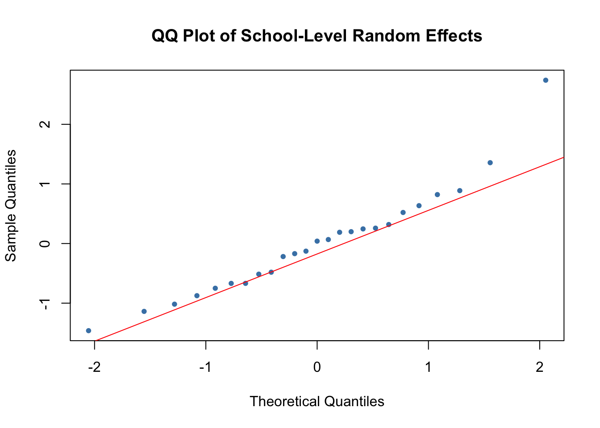
Figure 10: QQ plot of BLUPs for school-level intercepts
Under correct specification of the random effects distribution, these should fall along the reference line. Here, they look imperfect but pretty reasonable. There is a bit of a wobble in the line that goes a little wonky on the right end of the diagonal line.
Our new friend performance::check_model() includes a QQ plot of random effects when run on a mixed model object. Remember to include those extra chunk options so your plots will be big enough to be helpful. Here, we’ll want to pay special attention to the part that says “Normality of Random Effects”, since that’s where the plot of the random effects is:
# comprehensive diagnostic panel for the GLMM
performance::check_model(glmm.mod)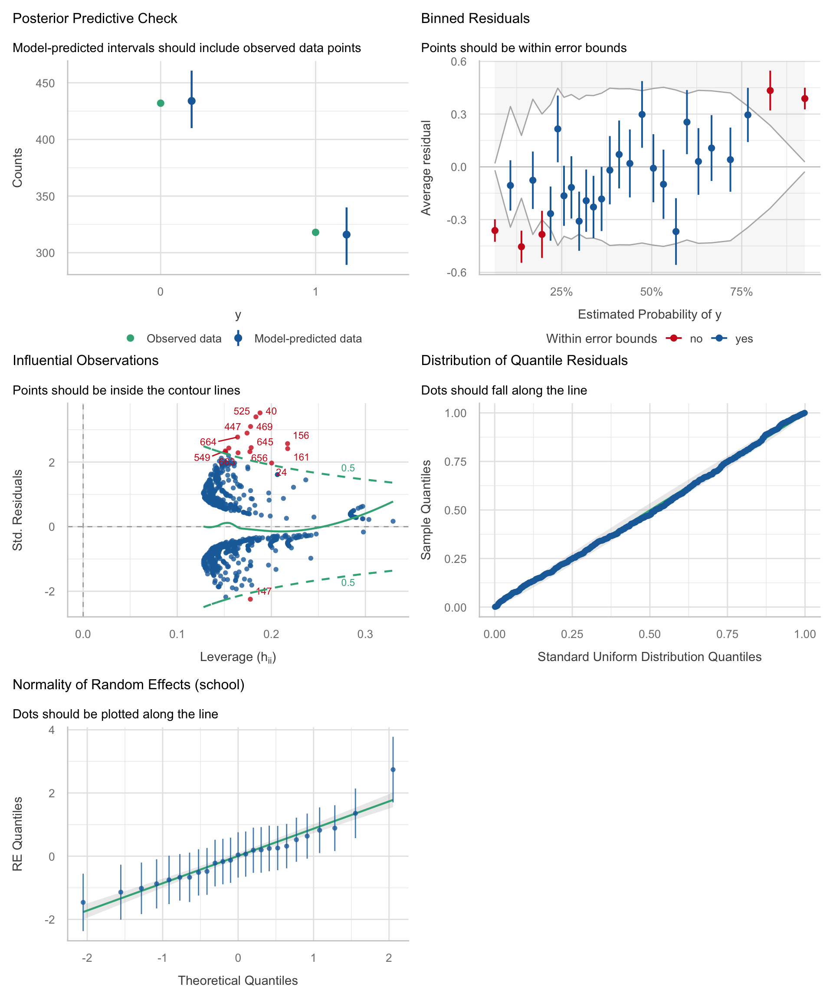
Let’s see if I have this right. This collection of plots seems to be telling me that the level 1 residuals look pretty good and don’t suffer from overdispersion, but there are some potentially problematic outliers at level one and a couple of level two residuals that are far from the uniform QQ line.
That sounds about right to me. We’d continue to tinker with the model if we were diagnosing a real model. But I want to introduce one additional place to look in your GLMM in the next section.
One additional GLMM-specific check worth making is whether the level-1 residual variance is consistent across groups. If some groups have systematically larger residuals than others (after accounting for the random effect), this can indicate that the variance structure is wrong or that important group-level predictors are missing.
Hold up. This sounds a lot like the homoscedasticity assumption in OLS!
You’re right to notice that they sound similar. In some ways, they are similar. Both are looking for constant spread of the errors. But there are some key differences. The most important difference is that the homoscedasticity assumption in OLS applies to a single, global variance \(\textrm{Var}(\varepsilon_i | X_i) = \sigma^2\). It assumes that the variance of that term is constant for all observations across all levels of each independent variable.
In mixed models, we’re just assuming that the local, level 1 variance of each level 2 cluster is the same as it is in the other clusters. This means the within-cluster error (\(\varepsilon_{ij}\)) should be constant across all \(j\) groups, such that \(\textrm{Var}(\varepsilon_{ij} = \sigma^2_{\varepsilon})\). In other words, the spread of the individual-level residuals within each cluster is the same across the clusters.
A simple visual check is to plot the within-group mean absolute deviance residual against a measure of group size or group mean on \(Y\). If residuals are well-behaved, the group-level averages should be roughly uniform across schools.Let’s try that:
# extract deviance residuals from the GLMM
glmm.df$resid <- residuals(glmm.mod, type = "deviance")
# compute within-group mean absolute residual
group.resid <- glmm.df %>%
group_by(school) %>%
summarise(
mean.abs.resid = mean(abs(resid)), # average absolute deviance residual
group.size = n() # group size
)
# plot
ggplot(group.resid, aes(x = reorder(school, mean.abs.resid),
y = mean.abs.resid,
fill = group.size)) + # map fill to group size
geom_col(alpha = 0.8) +
geom_text(aes(label = round(mean.abs.resid, 2)),
vjust = -0.5, size = 3) +
scale_fill_gradient(
low = "lightblue",
high = "darkblue",
name = "Group Size"
) +
labs(
x = "School (sorted by mean absolute residual)",
y = "Mean Absolute Deviance Residual",
title = "Within-Group Residual Variation"
) +
theme_minimal() +
theme(axis.text.x = element_blank())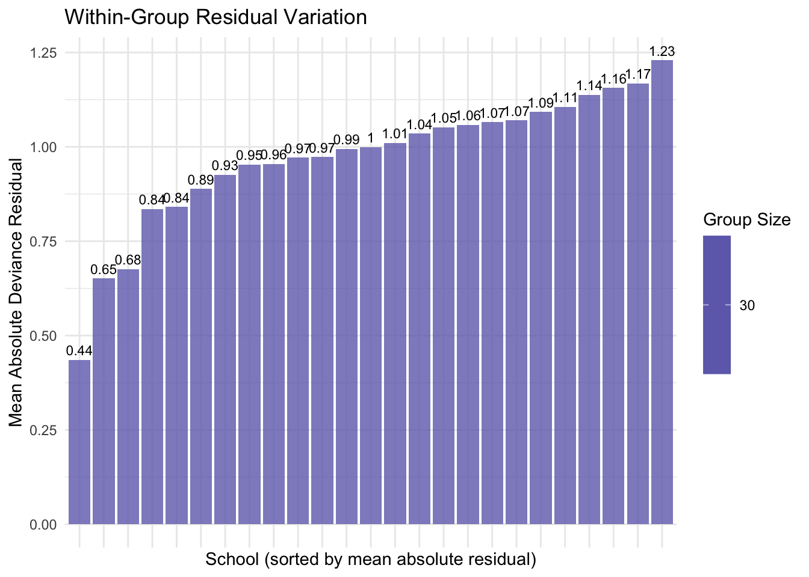
Figure 11: Mean absolute deviance residual by school
Large systematic differences across groups — especially if they correlate with group size or group-level predictors — are a flag worth investigating.
Right, but what is a “large systematic difference” in this context? Is what I’m looking at a large difference?
Aah, you’re a clever one. You caught me. In this specific case, we do see that there’s one group with a pretty small mean absolute deviance residual (MADR) relative to the rest. The smallest one is 0.44 and the largest is 1.23. There’s no firm threshold here, but a reasonable rule of thumb is to be concerned if the largest is more than 3x the smallest. Here, we haven’t quite met that standard.
If we had, it doesn’t necessarily mean that we have a huge problem. If the one with the biggest variance has the smallest sample size, this might not be a problem with the model’s fit; instead, it might just be that smaller-n groups will have higher variance as a result of the way that variance is calculated. Mixed models use “partial pooling,” meaning small groups are pulled towards the overall average. If the high-residual groups are small, the model may be providing a reasonable global fit despite the high local residuals.
But that’s not what’s happening here. I’ve set the plot above to color the bars by the size of the cluster. You may have noticed that they are all the same color. This is because our simulated data made each cluster be \(n=30\). So, if the group sizes are all large, however, this difference indicates a structural issue with the model.
What we’d do in this situation would be to diagnose our model for outliers, nonlinearity, etc and address what we find. This may solve the problem. Otherwise, we can either (1) model the heterogeneous variance using something like nmle::nmle(), which fits nonlinear mixed-effects models using an algorithm that allows for separate estimates of \(\sigma^2_j\) for each group. Alternatively, we can use sandwich standard errors (just like we do in heteroscedastic OLS) to avoid biased inferences.
When you’re diagnosing a GLM or GLMM in practice, work through this sequence:4
Start with DHARMa. Run simulateResiduals() and plot() on every non-Gaussian model as a first step. The QQ plot and residual-vs-fitted plot will catch most forms of misfit. For GLMMs, DHARMa is the most reliable tool available.
For analytical quantile residuals on single-level GLMs, statmod::qresid() or the family-specific functions are equivalent to DHARMa and require no simulation. Use them when you want deterministic (non-random) residuals for reproducibility.
For a broader panel of diagnostics — including Cook’s D, leverage, VIF, and posterior predictive checks — use performance::check_model(). It calls DHARMa internally for non-Gaussian models.
Use ggResidpanel for quick comparisons across model specifications, keeping in mind that it uses traditional (not quantile) residuals.
Check the random effects QQ plot for every GLMM. Look at both the level-1 DHARMa residuals and the level-2 BLUP QQ plot.
Do not use QQ plots of raw deviance or Pearson residuals as your primary diagnostic for binary or count outcomes. They will almost always look non-normal even under a correctly specified model, making them uninformative or actively misleading.
The identity link gives us the familiar Gaussian GLM, which is equivalent to OLS. The log link gives us Poisson or negative binomial. The logit link gives us binary logistic regression. Each link function transforms the mean so that the linear predictor can range over the real line while the predicted mean stays in a sensible range for the outcome.↩︎
The boot::glm.diag() function is the old-school workhorse for GLM diagnostics. It returns a list with components rp (standardized Pearson), rd (standardized deviance), res (jackknife), cook (Cook’s distance), and h (leverage). It works on any glm object. The individual functions like cooks.distance() and hatvalues() from base R also work on glm objects directly and are often easier to work with.↩︎
A QQ plot of BLUPs should be interpreted with care. BLUPs are shrunken toward zero by the mixed model’s partial-pooling mechanism, especially when groups are small. This shrinkage tends to make the empirical distribution of BLUPs look more normal than the true random effects distribution actually is. Significant deviations in the tails of the BLUP QQ plot are meaningful; the center of the distribution will almost always look well-behaved regardless. See Bates et al. (2015) for discussion.↩︎
This workflow synthesizes recommendations from Craig (2024), Hartig (2022), Lüdecke et al. (2021), and Social Science Computing Core (2022). It represents current best practice for diagnosing limited dependent variable models and mixed models, and deliberately moves away from the OLS-centric diagnostic habits (plotting raw deviance residuals, using plot(model)) that are common in older applied textbooks.↩︎